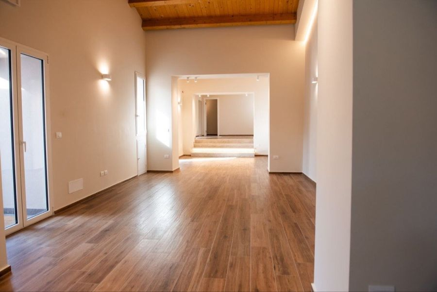

Non serve esperienza!
Quanto costa
Koro Pop, Arte e movimento, Teatro ragazzi, Teatro adulti20 incontri e lo spettacolo finale
Dizione10 incontri in gruppi di 3-4 persone
Cartapesta10 incontri, materiali compresi
Circolo Pickwick10 incontri e la restituzione finale
- La quota comprende la tessera dell'associazione e l'assicurazione.
- Si paga in due rate: il 50% all'iscrizione, il 50% a metà percorso.
Gli sconti
- −10%se ti iscrivi entro l'1 dicembre
- −10%se si iscrive anche un familiare
- −30%sul secondo laboratorio che fai
Koro Pop e Teatro adulti, per esempio: il teatro costa 165 € invece di 300 €, perché la tessera si paga una volta sola.
Domande frequenti
Non ho mai cantato, ballato o recitato davanti a qualcuno. Posso venire?
Sì. Nessun provino: si comincia tutti dalla prima lezione.
Posso pagare a rate?
Sì, in due rate: il 50% all'iscrizione e il 50% a metà percorso. Su 300 € sono 150 € subito e 150 € dopo.
Posso provare più di un laboratorio?
Sì: all'Open Day le prove sono a orari diversi. Spunta quelle che vuoi e le prenoti con un messaggio solo.
E se all'Open Day non posso?
Provi gratis nella prima settimana dei corsi, a dicembre. Scrivici su WhatsApp.
In che giorno si fa il laboratorio?
Dove il giorno non c'è ancora, lo fissiamo con chi si iscrive.
Il Casale
Facciamo teatro a San Giovanni La Punta dal 2006, e questa è casa nostra.

Via Pier Luigi Deodato 120, San Giovanni La Punta (Trappeto)
Portami al Casale